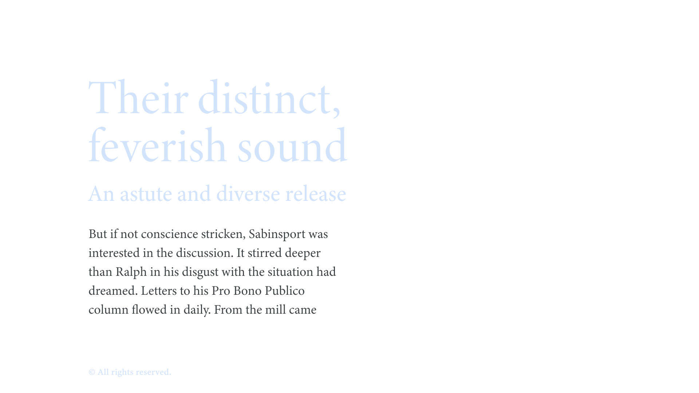

Text, or copy
By Google Fonts Knowledge contributors · Google Fonts Knowledge.
Original article · Source on GitHub · CC BY-SA 4.0. Text, illustrations and existing credits reproduced from the licensed Knowledge repository. Open Shelf adapted the layout and links; these adaptations are also CC BY-SA 4.0. No endorsement implied.
Text or copy is the content itself—the thing we set in type. We often use the term in distinction to headings, captions, pull quotes, and other textual matter of the piece. However, the word “text” can also imply the text optical size (or simply a small size), which is then interchangeable with the term “body.”

It’s impossible to talk about type without also talking about text. The act of setting type means we end up with text on a page, whether physical or digital. Writers, editors, and proofreaders often call this copy.
If referring to the size of the type (optical or not), text or body sizes are assumed to be small—given that it’s a reference to the size of the main text on the page—and so emphasis is placed on the readability of type at these so-called “text” sizes.
On the web, it’s useful to establish the text size at :root in order to define other type sizes (headings, captions, etc.) in relation to it.